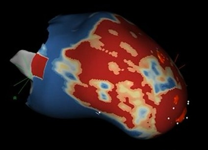
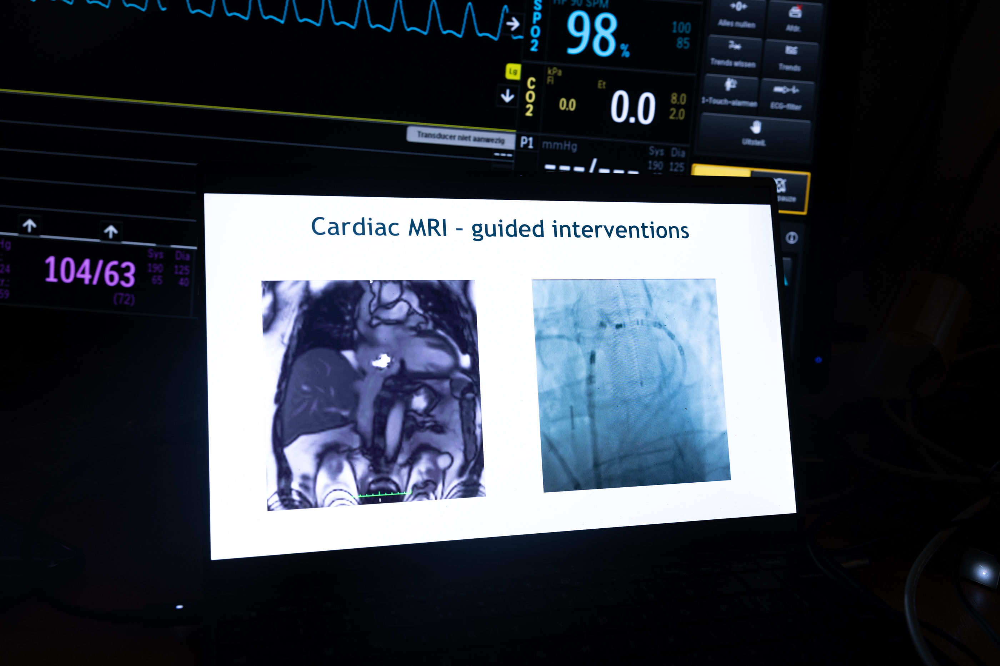
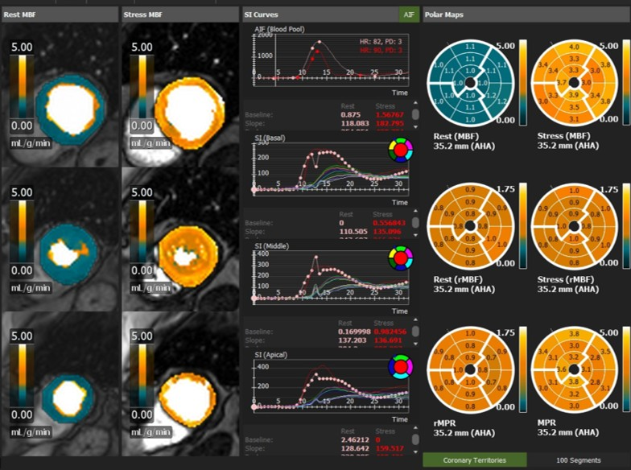

3D Tissue Characterization
Show how advanced tissue characterization supports arrhythmia substrate assessment, procedural planning, and intervention.
4D Flow
Using 4D phase-contrast MRI to characterize blood flow, wall shear stress, and energy loss in patients with aortic disease, valvular heart disease, and congenital conditions.

5D Cine
5D cine imaging captures a continuous 3D volume of the beating heart over all respiratory phases, reconstructed using compressed sensing and motion-resolved techniques while eliminating breath-holds entirely.
ECG-MRI Integratation
Acquiring electrophysiological data inside the MRI while minimizing magnetohydrodynamic effects and eliminating gradient induced voltages.

Interventional CMR (iCMR)
MRI-guided catheter procedures, ablation lesion visualization, and a full translational research programme bringing iCMR from bench to bedside.
Learn more about iCMR →
Quantitative Perfusion
Advancing quantitative assessment of myocardial blood flow and perfusion reserve with CMR.